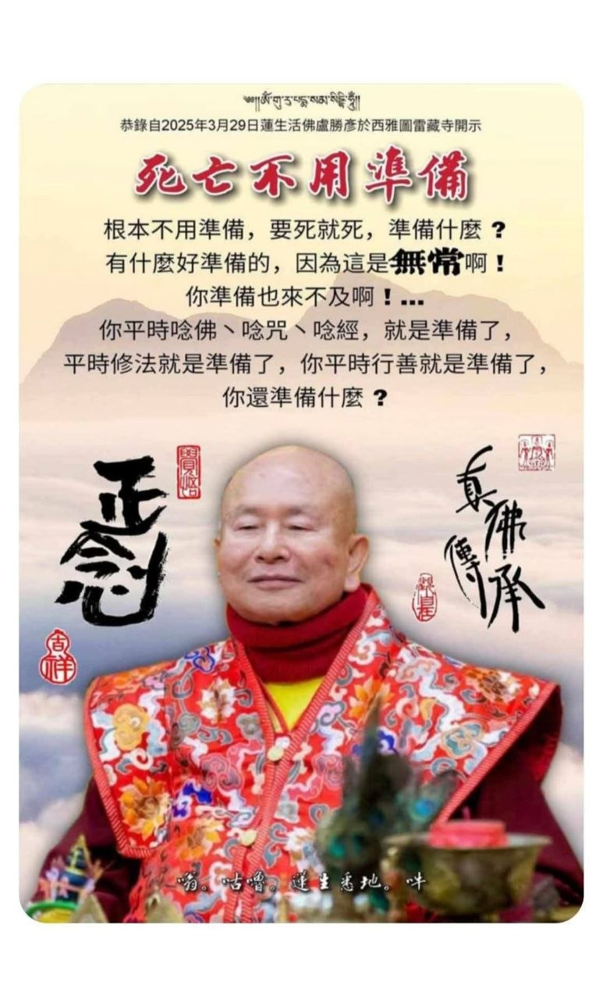
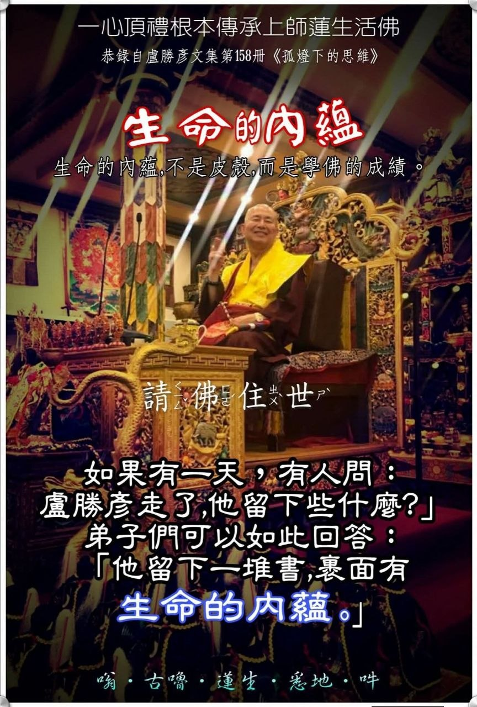
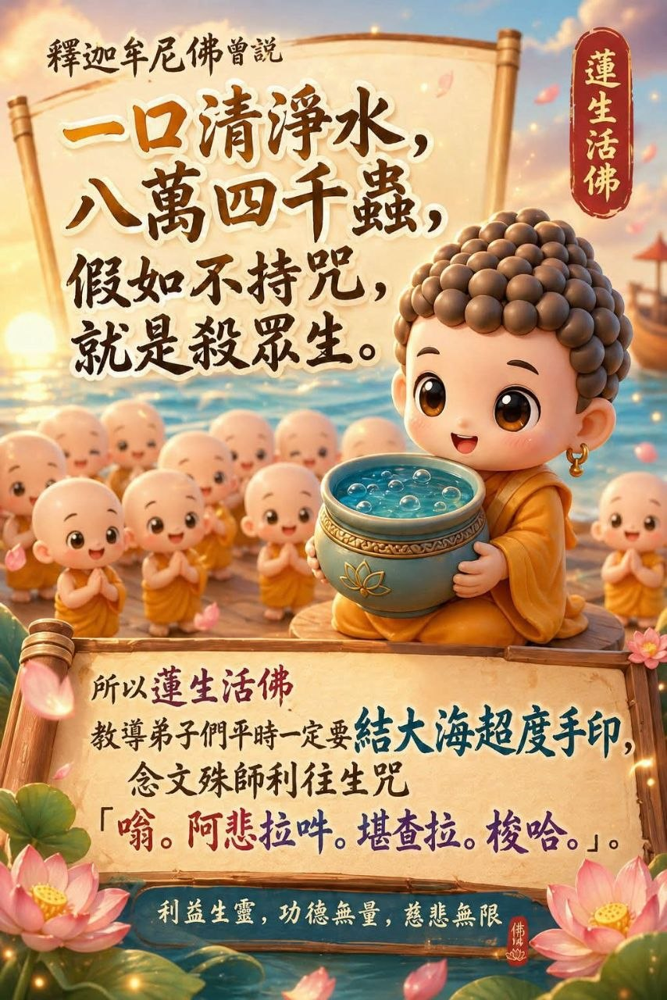
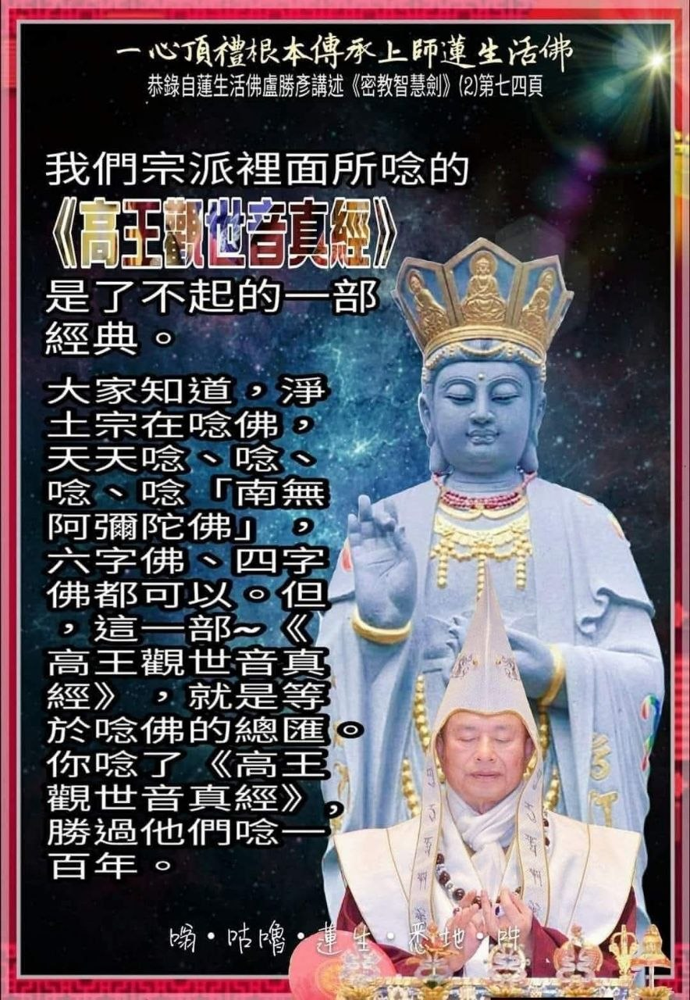
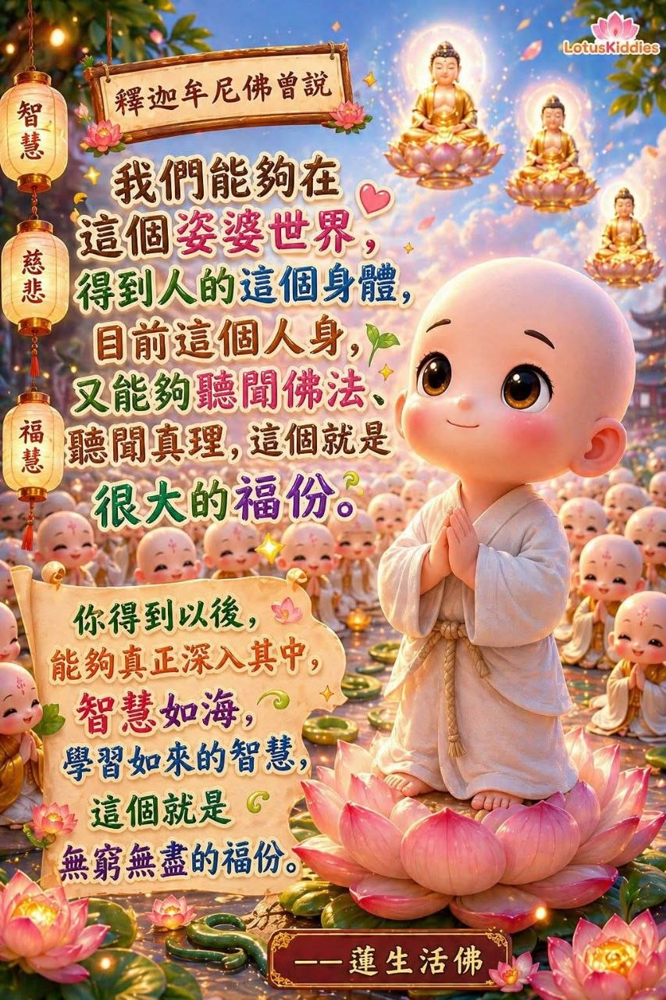
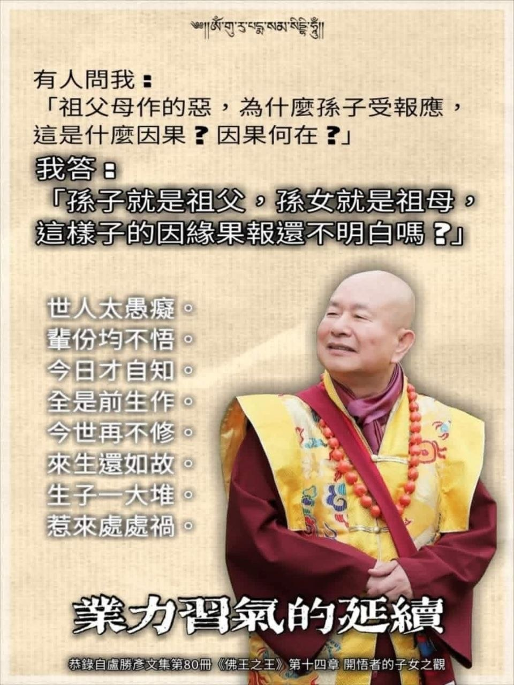
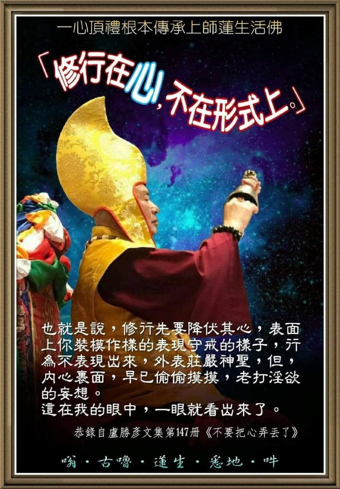

Sama sekali tidak perlu dipersiapkan, jika waktunya meninggal ya meninggal saja, mempersiapkan apa?
Apa yang perlu dipersiapkan, karena ini adalah Ketidakkekalan (Anitya)!
Mempersiapkannya pun sudah terlambat!...
Pelafalan nama Buddha, penjapaan mantra, dan pembacaan sutra dalam keseharianmu, itulah persiapannya.
Melatih Dharma dalam keseharianmu itulah persiapannya, melakukan kebajikan dalam keseharianmu itulah persiapannya.
Apa lagi yang perlu kau persiapkan?

Jika suatu hari nanti ada seseorang yang bertanya:
"Lu Sheng-yen telah pergi, apa yang dia tinggalkan?"
Para siswa dapat menjawab demikian:
"Dia meninggalkan setumpuk buku, yang di dalamnya terdapat Hakikat Kehidupan."

Buddha Sakyamuni pernah bersabda:
"Dalam seteguk air bersih, terdapat 84.000 makhluk kecil (mikroorganisme). jika tidak melafalkan mantra, maka itu sama saja dengan membunuh makhluk hidup."
Oleh karena itu, Mula Guru Lian Sheng mengajarkan kepada para siswa bahwa dalam kehidupan sehari-hari harus membentuk Mudra Penyeberangan Samudra (Ta Hai Chao Tu Shou Yin) dan melafalkan Mantra Kelahiran Kembali Manjusri:
"Om. Ah-pe-la-hum. Kan-cha-la. So-ha."
Memberi manfaat bagi makhluk hidup, jasa yang tak terhingga, kasih sayang yang tanpa batas.

Sutra Raja Agung Avalokitesvara (Kao Wang Kuan Shi Yin Zhen Jing) yang dilafalkan di dalam sekte kita (True Buddha School) adalah sebuah kitab suci yang luar biasa.
Kalian semua tahu bahwa dalam Aliran Tanah Suci (Jing Tu Zong), orang-orang melafalkan nama Buddha setiap hari, melafalkan 'Namo Amituofo', baik enam suku kata maupun empat suku kata.
Namun, satu kitab Sutra Raja Agung Avalokitesvara ini setara dengan ringkasan/kumpulan dari seluruh pelafalan nama Buddha.
Jika kamu melafalkan Sutra Raja Agung ini, kekuatannya melampaui pelafalan mereka selama seratus tahun.

Buddha Sakyamuni pernah bersabda:
Kita mampu terlahir di dunia Saha ini, mendapatkan tubuh manusia ini, dan pada saat yang sama dapat mendengarkan Dharma (Ajaran Buddha) serta mendengarkan Kebenaran, ini adalah berkah yang sangat besar.
Setelah kamu mendapatkannya, jika kamu mampu benar-benar mendalami ajaran tersebut, memiliki kebijaksanaan sedalam samudra, dan mempelajari kebijaksanaan Sang Tathagata (Buddha), inilah yang disebut sebagai berkah yang tiada habisnya.

Ada orang bertanya kepadaku:
Kejahatan yang diperbuat kakek-nenek, mengapa cucunya yang menerima balasannya (karma)? Sebab-akibat (Hukum Karma) macam apa ini? Di mana letak keadilan sebab-akibatnya?
Saya menjawab:
Cucu laki-laki itulah sang kakek, cucu perempuan itulah sang nenek. Tidakkah kamu memahami hubungan sebab-akibat dan balasan karma yang seperti ini?
Orang-orang di dunia terlalu bodoh dan tidak sadar.
Lintas generasi tetap tidak tercerahkan.
Baru hari ini menyadari diri sendiri.
Semuanya adalah perbuatan dari kehidupan lampau.
Jika kehidupan sekarang tidak lagi melatih diri (berkultivasi).
Kehidupan mendatang akan tetap sama seperti dulu.
Memiliki anak cucu yang banyak.
Hanya akan mengundang malapetaka di mana-mana.

Artinya, dalam melatih diri, hal pertama yang harus dilakukan adalah menaklukkan hati. Secara lahiriah, kamu mungkin berpura-pura menunjukkan sikap menjaga sila (peraturan), perilaku tidak terlihat menyimpang, dan penampilan luar tampak agung serta suci.
Namun, di dalam hati, kamu diam-diam masih terus memikirkan khayalan penuh nafsu keinginan. Hal seperti ini, di mata saya, bisa langsung terlihat jelas dalam sekali pandang.